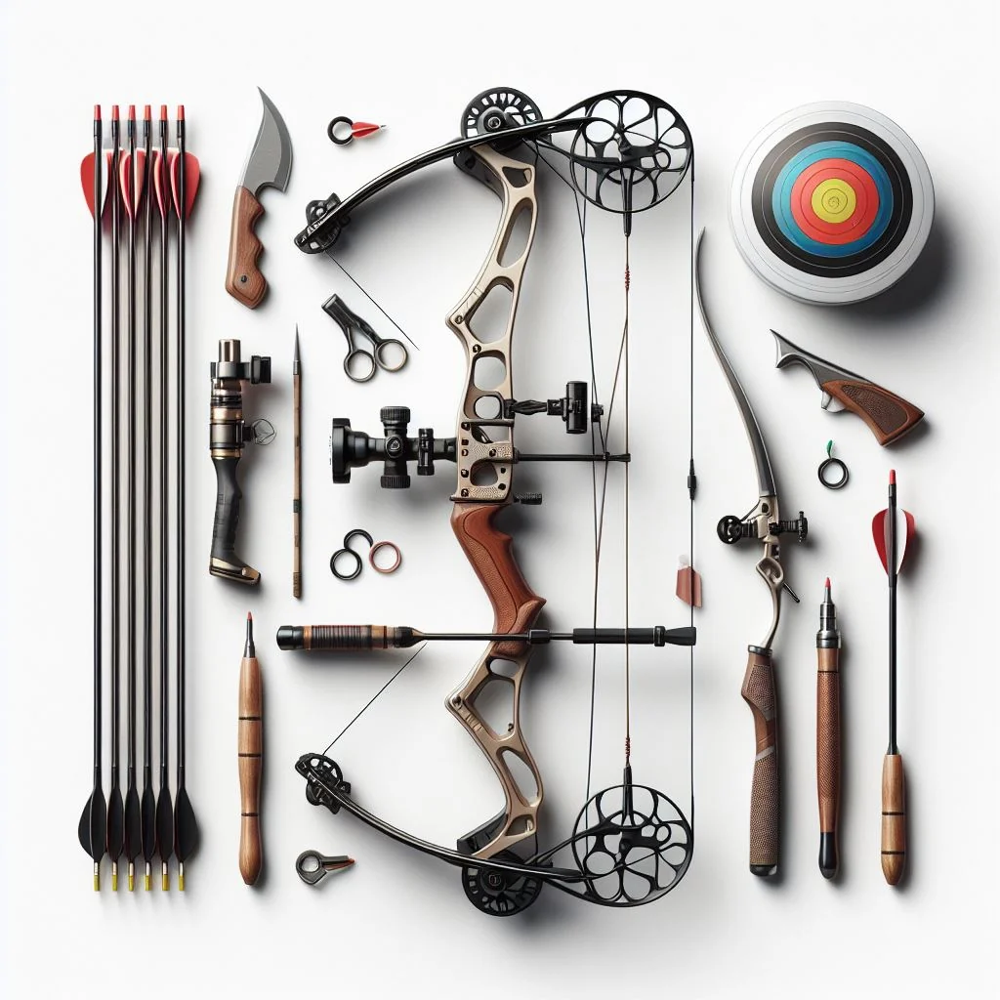

Wait for the command
Do not approach the line, nock an arrow, or collect arrows until the range officer says it is safe.
Non-negotiable
Local commands differ, but these habits travel. When in doubt, lower the bow and ask the range officer.
Do not approach the line, nock an arrow, or collect arrows until the range officer says it is safe.
Keep every bow, loaded or unloaded, aimed toward the target and backstop. Never sky-draw.
Confirm people, animals, and equipment are clear. Stop immediately if anyone calls “FAST” or “CEASE FIRE.”
Check limbs, string, nocks, arrows, and fasteners. Retire cracked arrows and damaged strings.
Walk, never run, to targets only after the all-clear. Pull arrows one person at a time while others stand aside.
Essential protection
